YOLO目标检测原理与实践
YOLO是RCNN、Fast-RCNN、Faster-RCNN之后的目标检测架构。根据实际测试，在yolo.cfg速度能到45fps，yolo-tiny速度能达到200fps，因此能够进行实时监测。因此最近公司在捣鼓如何使用YOLO作为目标检测的算法。（1年半前写的了，现在看回去觉得当时还真尼玛用心，那时候全网研究YOLO没几个人实现，能找到的资料都是全英的，现在github上面一大堆，YOLO2都出来了，真是发展迅猛，人老黄花瘦嗳）
YOLO: You only look once
官网: http://pjreddie.com/darknet/yolo/
论文地址: http://arxiv.org/abs/1506.02640
代码地址: https://github.com/pjreddie/darknet
1. YOLO的核心思想
YOLO的核心思想就是利用整张图作为网络的输入，直接在输出层回归bounding box的位置和bounding box所属的类别。
2. YOLO的实现方法
如图1所示，首先是对图片进行resize成规定的size（448x448），第二步是对整张图片进行卷积，第三步是使用非最大值抑制算法求得目标区域。有果儿第一次看非极大值抑制Non-max suppression的时候并不太明白这个算法到底是如何工作，现在暂时可以把非极大值抑制先放一边，了解完YOLO的实现之后可以看一下NMS算法如何工作，现在focus在YOLO是如何提交RCNN的效率，提取目标区域。
 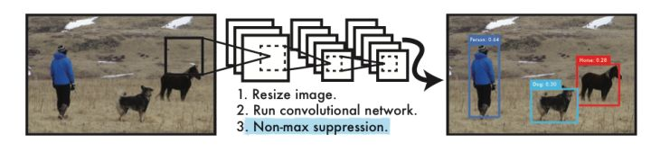
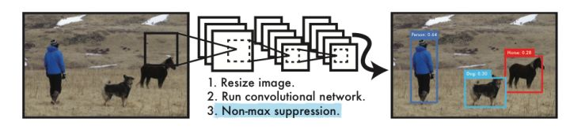预测
假设我们有一张图片如下所示，首先是需要对图片进行分割成为 SxS 个网格，在作者论文里面给出的是S=7，于是把原图分成 7x7=49 个网格，每一个网格的大小是 64x64 。每个网格要预测B个bbox，每bbox除了要回归自身的位置之外，还要附带预测一个confidence值。 这个confidence代表了所预测的bbox中含有object的置信度和这个box预测的有多准两重信息，其值是这样计算的：
Pr(Object)∗IOU(truth|pred)Pr(Object)∗IOU(truth|pred)
其中如果有object落在一个grid cell里，Pr(Object)取1，否则取0。 第二项是预测的bbox和实际的groundtruth之间的IoU值。
每个bbox要预测(x, y, w, h)和confidence共5个值，其中(x, y, w, h)并不是每个bbox的起始坐标和窗口宽度，x,y是相对于其对应的网格的偏移offset，w,h是该窗口对应于整张图像的长款比例。每个网格还要预测一个类别信息，记为C类。则SxS个网格，每个网格要预测B个bounding box还要预测C个categories。输出就是S x S x (5*B+C)的一个向量。
在预测的时候，每个网格预测的class信息和bounding box预测的confidence信息相乘，就得到每个bounding box的class-specific confidence score:
Pr(Classi)∗IOU(truth|pred)Pr(Classi)∗IOU(truth|pred)
等式左边第一项就是每个网格预测的类别信息，第二三项就是每个bounding box预测的confidence。这个乘积即encode了预测的box属于某一类的概率，也有该box准确度的信息。得到每个box的class-specific confidence score以后，设置阈值，滤掉得分低的boxes，对保留的boxes进行NMS处理，就得到最终的检测结果。
注意：class信息是针对每个网格的，confidence信息是针对每个bounding box的。
 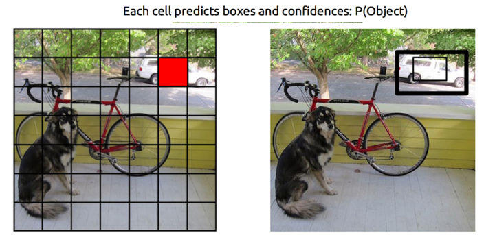
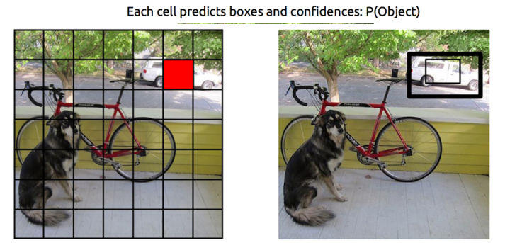对应于的每一个网络都会有B个boundingbox(bbox)作为预测的窗口，每一个预测的boundingbox(bbox)何其对应的置信度confidences P(Object)。如下图所示，其中 B=2 表示每一个 64x64 的网格有两个预测窗口boundingbox(bbox)。因此最后如下图右侧所示，义工有 7x7x2=98 个网格分布在图像当中:
 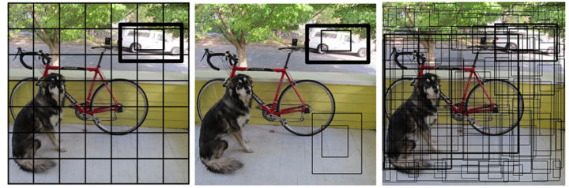
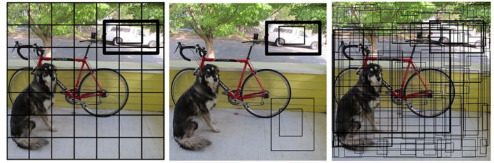另外一方面，因为已经把原图划分成为 7x7=49 个网格，而每一个网格可以对应一种分类的概率 P(Car|Object)。就这样把每一个网格的预测窗口bbox跟其分类相对应起来，就如下图所示:
 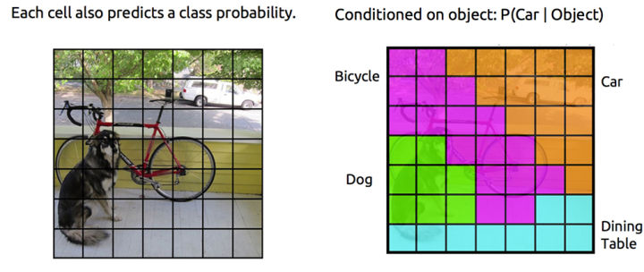
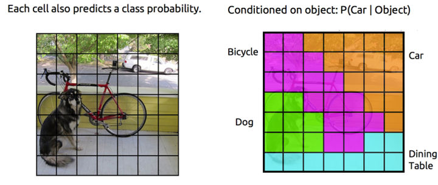在算法的最后使用了非极大值抑制算法，求每一个网格的多个bbox到底哪个bbox是最有可能的窗口:
 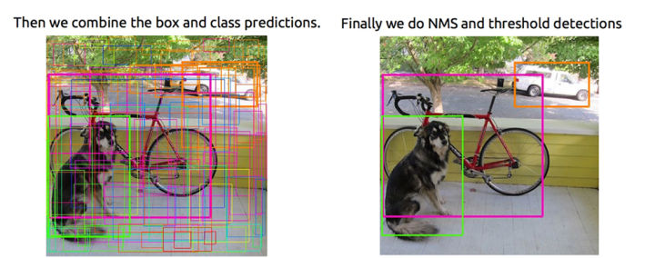
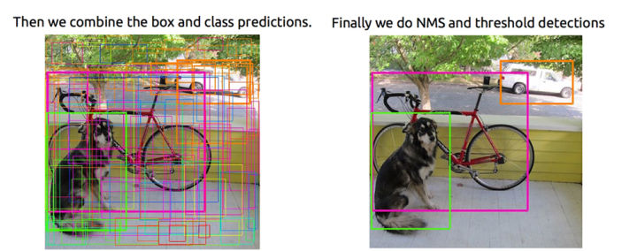Pr(Classi)∗IOU(truth|pred)Pr(Classi)∗IOU(truth|pred)
 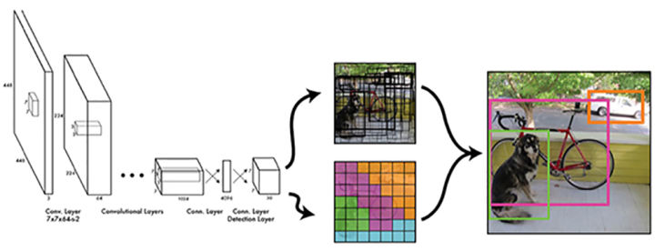
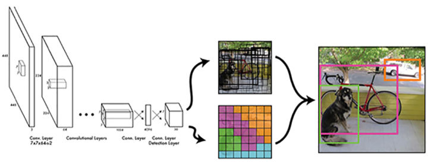训练
训练的时候需要对网格进行求解，因此用大量的图在这里进行表示讲解。在训练的时候，需要匹配正确的样本的中心得到其对应的网格里面，然后调整网格相对应的分类。这个时候检查网格对应的预测窗口bbox，如果找到最佳的窗口的时候，则调整窗口，并增加该窗口信息对应的置信度；当然啦，因为每一个网格对应多个预测窗口bbox，对于跟样本不是太匹配的预测窗口bbox我们把它的置信度降低。
 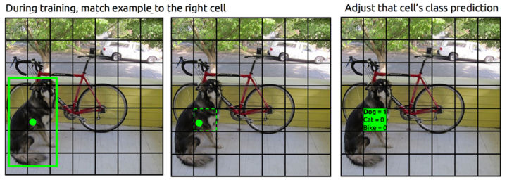
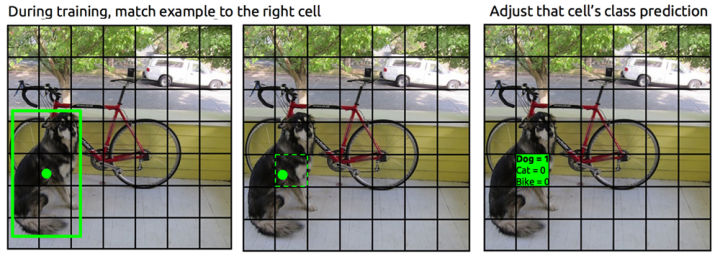 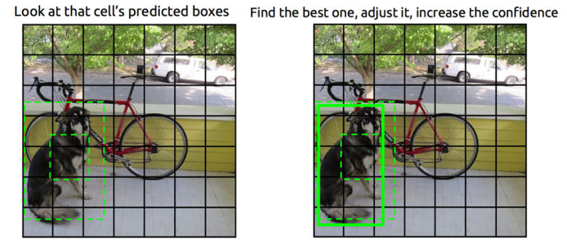
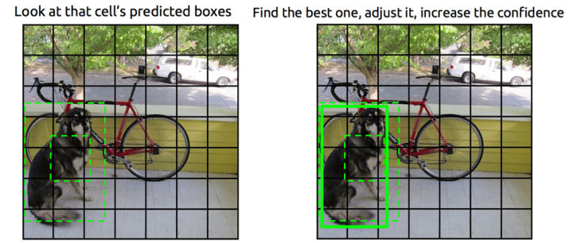 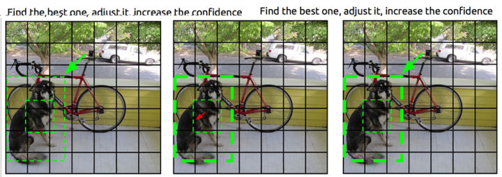
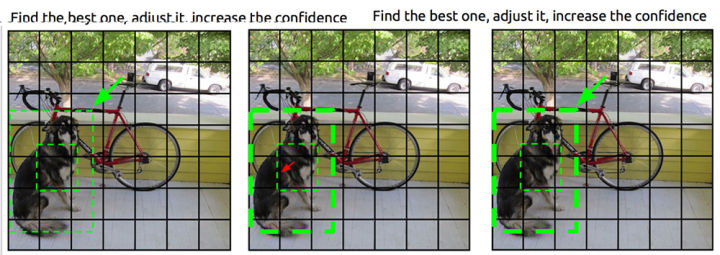另外一方面，在训练的时候会有一些窗口并没有检测到任何ground truth，这个时候检测bbox的置信度，并降低其对应预测窗口bbox的置信度，但是不要修改对应的分类和窗口坐标。最后经过多次迭代后窗口的位置就训练完毕。
 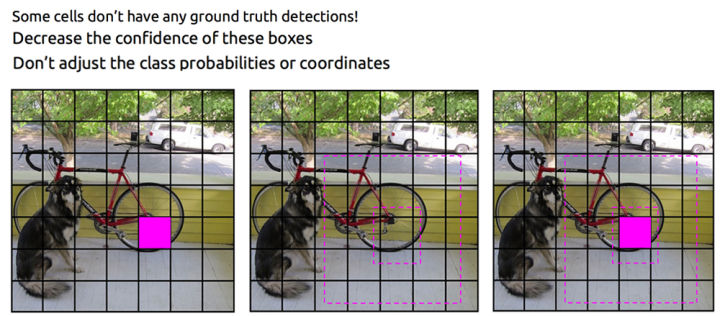
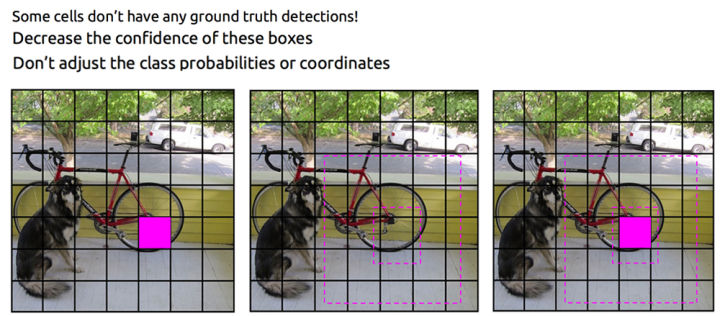3. YOLO的缺点
- YOLO对相互靠的很近的物体，还有很小的群体 检测效果不好，这是因为一个网格中只预测了两个框，并且只属于一类。
- 对测试图像中，同一类物体出现的新的不常见的长宽比和其他情况是。泛化能力偏弱。
- 由于损失函数的问题，定位误差是影响检测效果的主要原因。尤其是大小物体的处理上，还有待加强。
4. 运行YOLO2
编译
git clone https://github.com/pjreddie/darknet
cd darknet
make
运行
wget http://pjreddie.com/media/files/yolo.weights
./darknet detect cfg/yolo.cfg yolo.weights data/dog.jpg
运行结果
 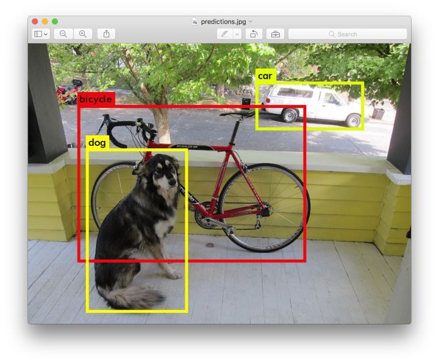
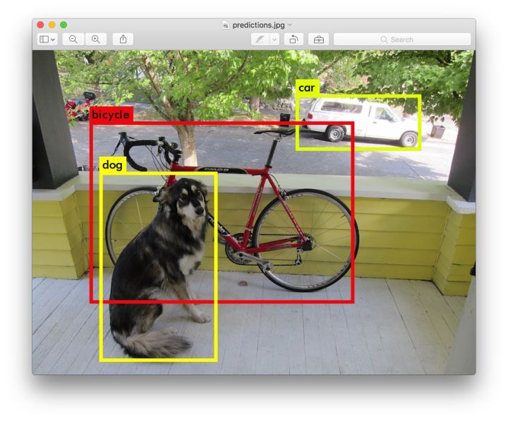layer filters size input output
0 conv 32 3 x 3 / 1 416 x 416 x 3 -> 416 x 416 x 32
1 max 2 x 2 / 2 416 x 416 x 32 -> 208 x 208 x 32
.......
29 conv 425 1 x 1 / 1 13 x 13 x1024 -> 13 x 13 x 425
30 detection
Loading weights from yolo.weights...Done!
data/dog.jpg: Predicted in 0.016287 seconds.
car: 54%
bicycle: 51%
dog: 56%
5. 用YOLOv2模型训练VOC数据集
1 修改./cfg/voc.data文件
classes= 20
//修改为你训练数据的.txt目录
train = /home/pjreddie/data/voc/train.txt
//修改为你验证数据的.txt目录
valid = /home/pjreddie/data/voc/2007_test.txt
names = data/voc.names
//修改为你的模型备份目录
backup = /home/pjreddie/backup/
2 开始训练
这里我选择的是22层的网络，batch_size=64，subdivisions=8，如果你的内存太小，运行出错的话，可以把这两个值改小一点，然后运行以下指令即可开始训练。
./darknet detector train ./cfg/voc.data ./cfg/yolo-voc.cfg
nohup: ignoring input
2 layer filters size input output
3 0 conv 32 3 x 3 / 1 416 x 416 x 3 -> 416 x 416 x 32
4 1 max 2 x 2 / 2 416 x 416 x 32 -> 208 x 208 x 32
5 2 conv 64 3 x 3 / 1 208 x 208 x 32 -> 208 x 208 x 64
6 3 max 2 x 2 / 2 208 x 208 x 64 -> 104 x 104 x
......
31 28 conv 1024 3 x 3 / 1 13 x 13 x3072 -> 13 x 13 x1024
32 29 conv 125 1 x 1 / 1 13 x 13 x1024 -> 13 x 13 x 125
33 30 detection
34 yolo-voc
35 Learning Rate: 0.0001, Momentum: 0.9, Decay: 0.0005
36 Loaded: 1.850000 seconds
37 Region Avg IOU: 0.358097, Class: 0.065954, Obj: 0.474037, No Obj: 0.508373, Avg Recall: 0.200000, count: 15
38 Region Avg IOU: 0.360629, Class: 0.065775, Obj: 0.466963, No Obj: 0.508891, Avg Recall: 0.178571, count: 28
39 Region Avg IOU: 0.328480, Class: 0.048047, Obj: 0.471501, No Obj: 0.509045, Avg Recall: 0.217391, count: 23
40 Region Avg IOU: 0.387740, Class: 0.060535, Obj: 0.495033, No Obj: 0.509017, Avg Recall: 0.333333, count: 12
41 Region Avg IOU: 0.284584, Class: 0.046532, Obj: 0.471151, No Obj: 0.508602, Avg Recall: 0.090909, count: 22
42 Region Avg IOU: 0.335542, Class: 0.049446, Obj: 0.520727, No Obj: 0.508899, Avg Recall: 0.150000, count: 20
43 Region Avg IOU: 0.366046, Class: 0.055863, Obj: 0.502995, No Obj: 0.509692, Avg Recall: 0.250000, count: 32
44 Region Avg IOU: 0.411998, Class: 0.050235, Obj: 0.497955, No Obj: 0.506873, Avg Recall: 0.375000, count: 16
45 1: 18.557627, 18.557627 avg, 0.000100 rate, 15.430000 seconds, 64 images
46 Loaded: 0.000000 seconds
47 Region Avg IOU: 0.394109, Class: 0.048967, Obj: 0.449230, No Obj: 0.454679, Avg Recall: 0.333333, count: 15
48 Region Avg IOU: 0.430337, Class: 0.044501, Obj: 0.475584, No Obj: 0.454697, Avg Recall: 0.250000, count: 16
49 Region Avg IOU: 0.318591, Class: 0.069988, Obj: 0.490419, No Obj: 0.454365, Avg Recall: 0.133333, count: 15
50 Region Avg IOU: 0.335521, Class: 0.060138, Obj: 0.408140, No Obj: 0.454221, Avg Recall: 0.277778, count: 18
51 Region Avg IOU: 0.360168, Class: 0.055241, Obj: 0.456031, No Obj: 0.455356, Avg Recall: 0.307692, count: 13
52 Region Avg IOU: 0.343406, Class: 0.056148, Obj: 0.439433, No Obj: 0.454594, Avg Recall: 0.187500, count: 16
53 Region Avg IOU: 0.349903, Class: 0.047826, Obj: 0.392414, No Obj: 0.454783, Avg Recall: 0.235294, count: 17
54 Region Avg IOU: 0.319748, Class: 0.059287, Obj: 0.456736, No Obj: 0.453497, Avg Recall: 0.217391, count: 23
55 2: 15.246732, 18.226538 avg, 0.000100 rate, 9.710000 seconds, 128 images
56 Loaded: 0.000000 seconds
3 测试
训练了一晚上迭代了6000次，我们测试下，看一下6000次迭代后的效果
$./darknet detector test cfg/voc.data cfg/yolo-voc.cfg backup/yolo-voc_6000.weights data/dog.jpg
下图分别使用COCO数据集测试和VOC测试集运行YOLO的效果
 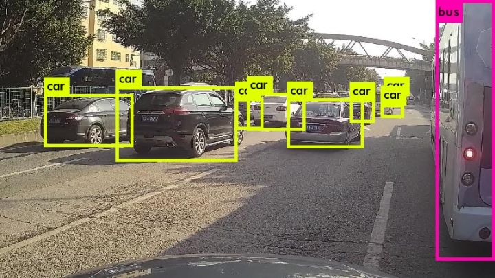
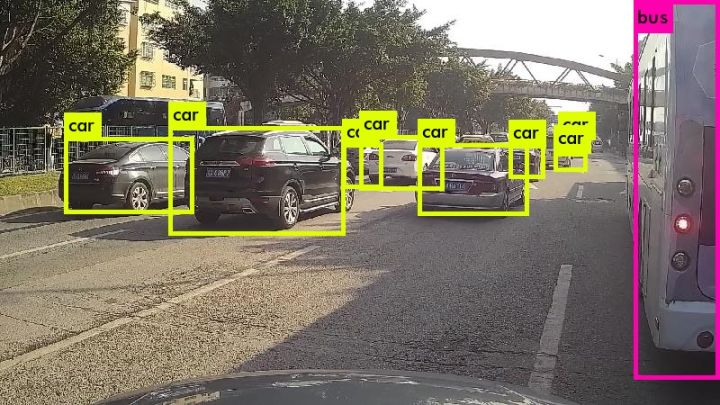 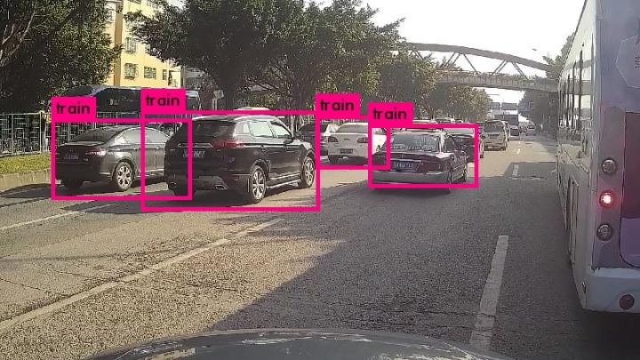
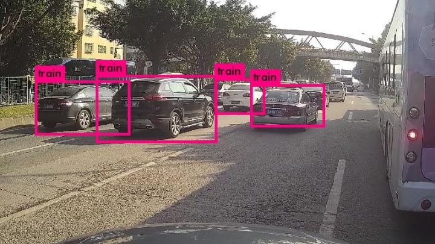参考：
-----------------------万能的分割线--------------------------
原创文章写得俺手软，兄弟姐妹将就着看一下，写得不好一定要喷。毕竟是花了心血的东西，同样欢迎转载，转载前注明作者（陈仲铭），zomi 在此谢谢。
22 条评论
自己采集啊
没那么少啊，起码上万
非常不错，正巧在看相关领域的知识，送来了及时雨
anchor可以当做是特征图上的bounding box
可以可以
楼主第五点：用YOLOv2模型训练VOC数据集，没有输入weights，所以是完全重新开始训练的么？
请问，上面提到的预测，可以理解为实际的检测阶段吧？那实际检测时没法得到IOU啊，两个bbox的confidence（也就是IOU）怎么确定呢？
通过BP算法和SGD算法求得
感谢大佬 在IC 的PROJECT 是AUTOdrive 临时抱佛脚有望了
有现成标注好的，可以看看darknet官网哈
这条路好眼熟，有点像广州的江海大道
有重新造轮子的大婶吗？